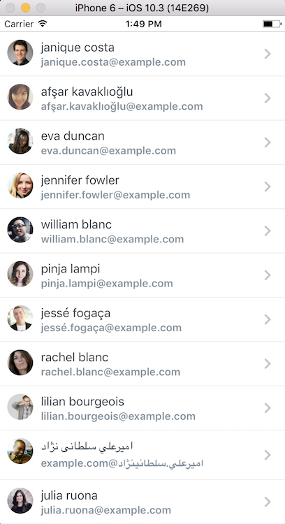

使用nodemailler发送邮件
这里我们以使用qq邮箱发送邮件为例。
- 安装nodemailer
|
|
- 使用
|
|
这里我们以使用qq邮箱发送邮件为例。
|
|
|
|
需要定义很多初始化state变量？
表单编辑后点取消，重新从后台拿数据如果是null的时候它不会自动更新state？
组件复用：未编写PropTypes，如果写了有时候返回的字段是null的，怎么写PropTypes？
组件复用：如果组件自己处理内部逻辑，那外面的组件如何拿到组件里面的数据？
页面需要记住类似查询状态，如何简单有效的实现？使用高阶组件实现？如何做到不冲突？
提示框太难用了？
|
|
需要封装常用的对象或数组操作工具方法
表单使用体验太差：需要编写一大推标签；需要手动编写value和onChange；表单校验需要改善
npm 包依赖如何做到同步更新？npm安装依赖包经常报错？npm打包太慢，启动太慢？打包后的文件不会自动加入svn版本控制？
npm安装依赖包报：
npm ERR! unlink的错误，解决方法：
|
|
最好打包时自动运行npm update操作：
|
|
如何做到公共thunk的合并？
front编译如何做到自动化？
process.env.NODE_ENV在编译后变成I.env.NODE_ENV？
如何require或import远程地址的文件？
脚手架运行时最好能判断当前的版本是不是最新的，如果不是就报错，这样能确保安装最新的脚手架？
热加载更新？
|
|
js生成sourcemap方便调试？
组件间的样式在打包后会被相互影响？
使用css module
如何解决ulynlist问题：basePath问题（貌似可以自己引）？
打包时如果output.publicPath为空字符串时会找不到字体图标的bug？
配置：
|
|
样式想要抽成公用的，有两种方法：
如果只想在入口引用一个，则必须写到entry中；
如果在多个文件中引用？
一、什么是React？
React是Facebook开源的一个用于构建用户界面的Javascript库，他不是一个框架，而是专注于MVC架构中的V，即视图。这使得React很容易和开发者已有的开发栈进行融合。React顺应了Web开发组件化的趋势。应用React时，你总是应该从UI出发抽象出不同的组件，然后像搭积木一样把它们拼装起来。
二、React能做什么？

补充：桌面应用程序（NW.js和Electron.js）
二、React全家桶
React由Facebook所写，由虚拟Dom、组件化获得广大前端开发者的青睐，下面我们通过一个示例来演示创建React项目的步骤：
ReactReact解决了创建大型项目性能以及复用性问题，React可以有两种写法：
使用React.createClass语法
var HelloComponent = React.createClass({
render: function() {
return (
<div className="hello">
Hello, world!
</div>
);
}
});
使用ES6语法
class HelloComponent extends React.Component {
render() {
return (
<div className="hello">
Hello, world!
</div>
);
}
}
Node.js和NPM，然后运行npm init创建一个package.json文件.npm install react react-dom babel-core babel-loader babel-preset-es2015 babel-preset-react webpack webpack-dev-server --savewebpack.config.js配置文件，这个的作用是帮我们打包资源，转换JSX为JS文件、合并、压缩、编译等等等。。。一个简单的webpack.config.js大致如下：
var debug = process.env.NODE_ENV !== "production";
var webpack = require('webpack');
var path = require('path');
module.exports = {
context: path.join(__dirname, "src"),
devtool: debug ? "inline-sourcemap" : null,
entry: "./js/App.js",
devServer: {
inline: true,
port: 3333
},
module: {
loaders: [
{
test: /\.jsx?$/,
exclude: /(node_modules|bower_components)/,
loader: 'babel-loader',
query: {
presets: ['react', 'es2015'],
plugins: ['react-html-attrs', 'transform-class-properties', 'transform-decorators-legacy'],
}
}
]
},
output: {
path: __dirname + "/src/",
filename: "bundle.min.js"
},
plugins: debug ? [] : [
new webpack.optimize.DedupePlugin(),
new webpack.optimize.OccurenceOrderPlugin(),
new webpack.optimize.UglifyJsPlugin({ mangle: false, sourcemap: false }),
],
};
程序的入口通过entry设置，即页面第一次加载运行的文件，Webpack将把所有的JS和JSX文件到文件的输出对象，通过devServer设置webpack开发服务器为内联，并设置端口为3333，在module配置中，我们配置babel转换规则：使用react和es2015,plugins增加了类的属性和装饰器的功能。
首先安装热加载模块：
npm install --save-dev babel-preset-react-hmre
然后加到配置中：
....
query: {
presets: ['react', 'es2015', 'react-hmre'],
plugins: ['react-html-attrs', 'transform-class-properties', 'transform-decorators-legacy'],
}
另一个选择是安装react-hot-loader然后添加react-hot到webpack.config.js配置中：
...
loader: ['babel-loader', 'react-hot']
...
为了运行项目更简单，我们一般会使用package.json的命令：
{
"scripts": {
"start": "node_modules/.bin/webpack-dev-server --progress --inline --hot",
}
}
注意：我们命令中添加了--hot，这个启动了热加载模式.
路由是一个应用非常重要的一部分，在React中比较受欢迎的莫属React Router了，事实上，很多开发者认为它就是React官方版的路由，当然，你得先安装它：
npm install --save react-router
一个简单的示例看起来是这样子的：
import React from 'react';
import { render } from 'react-dom';
import { browserHistory, Router, Route, IndexRoute } from 'react-router'
import App from '../components/App'
import Home from '../components/Home'
import About from '../components/About'
import Features from '../components/Features'
render(
<Router history={browserHistory}>
<Route path='/' component={App}>
<IndexRoute component={Home} />
<Route path='about' component={About} />
<Route path='features' component={Features} />
</Route>
</Router>,
document.getElementById('app')
)
通过react-intl你可以很轻松地实现国际化，它支持超过150中不同语言，默认是英文，呃~
Authentication is an important part of any application. The best way to do user authentication for single page apps is via JSON Web Tokens (JWT). A typical authentication flow is this:
A comprehensive example of adding authentication to a ReactJS app is here. Using Redux? Here is a good example of setting up authentication in your ReactJS application.
Without a backend, you can persist data in your Single Page App by using Firebase. In a Reactjs app, all you simply need is ReactFire. It is a ReactJS mixin for easy Firebase integration. With ReactFire, it only takes a few lines of JavaScript to integrate Firebase data into React apps via the ReactFireMixin
npm install --save reactfire react firebase
TodoList Example
import React from 'react';
class TodoList extends React.Component {
render() {
var _this = this;
var createItem = (item, index) => {
return (
<li key={ index }>
{ item.text }
<span onClick={ _this.props.removeItem.bind(null, item['.key']) }
style=>
X
</span>
</li>
);
};
return <ul>{ this.props.items.map(createItem) }</ul>;
}
}
class TodoApp extends React.Component {
getInitialState() {
return {
items: [],
text: ''
};
}
componentWillMount() {
this.firebaseRef = firebase.database().ref('todoApp/items');
this.firebaseRef.limitToLast(25).on('value', function(dataSnapshot) {
var items = [];
dataSnapshot.forEach(childSnapshot => {
const item = childSnapshot.val();
item['.key'] = childSnapshot.key;
items.push(item);
});
this.setState({
items: items
});
}.bind(this));
}
componentWillUnmount() {
this.firebaseRef.off();
}
onChange(e) {
this.setState({text: e.target.value});
}
removeItem(key) {
var firebaseRef = firebase.database().ref('todoApp/items');;
firebaseRef.child(key).remove();
}
handleSubmit(e) {
e.preventDefault();
if (this.state.text && this.state.text.trim().length !== 0) {
this.firebaseRef.push({
text: this.state.text
});
this.setState({
text: ''
});
}
}
render() {
return (
<div>
<TodoList items={ this.state.items } removeItem={ this.removeItem } />
<form onSubmit={ this.handleSubmit }>
<input onChange={ this.onChange } value={ this.state.text } />
<button>{ 'Add #' + (this.state.items.length + 1) }</button>
</form>
</div>
);
}
}
ReactDOM.render(<TodoApp />, document.getElementById('todoApp'));
More information about persisting your data using ReactFire here.
Most projects become a mountain of spaghetti code at some point during development due to lack of solid tests or no tests at all. ReactJS apps are no different, but this can be avoided if you know some core principles. When writing tests for ReactJS code, it is helpful to pull out any functionality that doesn’t have to do with any UI components into separate modules, so that they can be tested separately. Tools for unit testing those functionalities are mocha, expect, chai, jasmine.
Testing becomes tricky in a ReactJS application when you have to deal with components. How do you test stateless components? How do you test components with state? Now, ReactJS provides a nice set of test utilities that allow us to inspect and examine the components we build. A particular concept worthy of mention is Shallow Rendering. Instead of rendering into a DOM the idea of shallow rendering is to instantiate a component and get the result of its render method. You can also check its props and children and verify they work as expected. More information here.
Facebook uses Jest to test React applications. AirBnB uses Enzyme. When bootstrapping your ReactJS application, you can set up any of these awesome tools to implement testing.
A lot of tools have been mentioned in this post in relation to setting up different parts of a ReactJS app. If you don’t intend writing your app from scratch, there are lots of generators and boilerplates that tie all these tools together to give you a great starting point for your app. One fantastic example is React Starter Kit. It has a Yeoman generator. It’s an isomorphic web app boilerplate that contains almost everything you need to build a ReactJS app. Another boilerplate is React Static boilerplate, it helps you build a web app that can be hosted directly from CDNs like Firebase and Github Pages. Other alternatives are React redux starter kit and React webpack generator. Recently, a nice and effective tool called create-react-app was released by the guys at Facebook. It’s a CLI tool that helps create React apps with no build configuration!
There are several tools that will help bootstrap your React app, we looked at a couple that we consider quite good and will have your application up and running in no time. But feel free to search for your own tools, and if you think that we are missing something, let us know in the comments. Setting up a React project should be painless!
“Setting up a React project should be painless!”
|
|
安装：
|
|
如果你使用的是 Linux 或 Mac，直接键入上面的命令很可能会有权限错误。原因是 npm需要把 supervisor 安装到系统目录，需要管理员授权，可以使用 sudo npm install -g supervisor 命令来安装。
接下来，更改pcakge.json中的start字段：
|
|
之后运行npm start既可，命令行窗口会显示启动成功信息，即开启了代码监听。
|
|
https://facebook.github.io/react/blog/2017/09/26/react-v16.0.html
|
|
以前的版本，如果子组件有报错整个组件本身直接不渲染，而现在可以通过componentDidCatch捕获错误信息：
|
|
现在可以通过React.createPortal(<SomeComponent/>, document.getElementById('root'))的形式在react应用容器之外修改或增加DOM：
|
|
这样对于像要创建模态框就很容易了：
|
|
省略。。。
以前是直接忽视无法识别的属性，而现在是直接渲染给DOM，这也直接节省了很多代码。
具体参考：https://facebook.github.io/react/blog/2017/09/08/dom-attributes-in-react-16.html
react is 5.3 kb (2.2 kb gzipped), down from 20.7 kb (6.9 kb gzipped).
react-dom is 103.7 kb (32.6 kb gzipped), down from 141 kb (42.9 kb gzipped).
react + react-dom is 109 kb (34.8 kb gzipped), down from 161.7 kb (49.8 kb gzipped).
妥协了…
自从0.43版本以来，react-native新增了两个新的列表视图组件：FlatList以及SectionList，现在我们来看看FlatList组件的使用。
在FlatList中有个比较重要的属性：data和renderItem属性，data为object数组，renderItem可以控制每个item的渲染规则。
这边的示例我们将会从Random User Generator API中拿，UI渲染将会使用react-native-elements的组件。
|
|
然后外边就可以使用：
|
|
效果图如下：

链接：https://zhuanlan.zhihu.com/p/24776678?group_id=802649040843051008
这篇文章主要面向想要使用 HOC（Higher Order Component，高阶组件） 模式的进阶开发者。如果你是 React 新手，建议你从阅读 React 的文档开始。
高阶组件是一种很好的模式，很多 React 库已经证明了其价值。这篇文章中我们将会详细的讲解什么是 HOC，你能用它做什么，它有哪些局限，如何实现它。
在附录中有一些相关的话题，可能不是 HOC 的核心，但是我认为应该提到。
这篇文章尽量做到详尽无遗，如果你发现任何遗漏的，请提出来，我会做出必要的改动。
这篇文章假设你已经了解 ES6。
让我们开始吧！
高阶组件就是一个 React 组件包裹着另外一个 React 组件
这种模式通常使用函数来实现，基本上是一个类工厂（是的，一个类工厂！），它的函数签名可以用类似 haskell 的伪代码表示
|
|
其中 W (WrappedComponent) 指被包裹的 React.Component，E (EnhancedComponent) 指返回类型为 React.Component 的新的 HOC。
我们有意模糊了定义中“包裹”的概念，因为它可能会有以下两种不同的含义之一：
Props Proxy： HOC 对传给 WrappedComponent W 的 porps 进行操作;
Inheritance Inversion： HOC 继承 WrappedComponent W。
（译注：原作者在评论中提到希望对 Props Proxy 和 Inheritance Inversion 不做翻译，故保留原文）
我们会深入地探究这两种模式。
这一节我们将会研究 React 中两种 HOC 的实现方法：Props Proxy (PP) and Inheritance Inversion (II)。两种方法都可以操作 WrappedComponent。
Props Proxy (PP) 的最简实现：
|
|
这里主要是 HOC 在 render 方法中 返回 了一个 WrappedComponent 类型的 React Element。我们还传入了 HOC 接收到的 props，这就是名字 Props Proxy 的由来。
|
|
在 React 内部的一致化处理（reconciliation process）中，两者都创建了一个 React Element 用于渲染。如果你想了解关于 React Elements vs Components ，请看 Dan Abramov 的这篇文章，想了解一致化处理请参考文档。
（译注：一致化处理（reconciliation process）可理解为 React 内部将虚拟 DOM 同步更新到真实 DOM 的过程，包括新旧虚拟 DOM 的比较及计算最小 DOM 操作）
你可以读取、添加、编辑、删除传给 WrappedComponent 的 props。
当删除或者编辑重要的 props 时要小心，你可能应该通过命名空间（命名空间是什么鬼？）确保高阶组件的 props 不会破坏 WrappedComponent。
例子：添加新的 props。在这个应用中，当前登录的用户可以在 WrappedComponent 中通过 this.props.user 访问到。
|
|
你可以通过引用（ref）访问到 this （WrappedComponent 的实例），但为了得到引用，WrappedComponent 还需要一个初始渲染，意味着你需要在 HOC 的 render 方法中返回 WrappedComponent 元素，让 React 开始它的一致化处理，你就可以得到 WrappedComponent 的实例的引用。
例子：如何通过 refs 访问到实例的方法和实例本身：
|
|
Ref 的回调函数会在 WrappedComponent 渲染时执行，你就可以得到 WrappedComponent 的引用。这可以用来读取/添加实例的 props ，调用实例的方法。
你可以通过传入 props 和回调函数把 state 提取出来，类似于 smart component 与 dumb component。更多关于 dumb and smart component。
提取 state 的例子：提取了 input 的 value 和 onChange 方法。这个简单的例子不是很常规，但足够说明问题。
|
|
你可以这样用：
|
|
这个 input 会自动成为受控input。
更多关于常规的双向绑定 HOC 请点击 链接
为了封装样式、布局或别的目的，你可以用其它组件和元素包裹 WrappedComponent。基本方法是使用父组件（附录 B）实现，但通过 HOC 你可以得到更多灵活性。
例子：包裹样式
|
|
Inheritance Inversion (II) 的最简实现：
|
|
你可以看到，返回的 HOC 类（Enhancer）继承了 WrappedComponent。之所以被称为 Inheritance Inversion 是因为 WrappedComponent 被 Enhancer 继承了，而不是 WrappedComponent 继承了 Enhancer。在这种方式中，它们的关系看上去被反转（inverse）了。
Inheritance Inversion 允许 HOC 通过 this 访问到 WrappedComponent，意味着它可以访问到 state、props、组件生命周期方法和 render 方法。
关于生命周期方法可以用来做什么，我不想细说，因为它是 React 的特性而不是 HOC 的特性。但请注意通过 II 你可以创建新的生命周期方法。为了不破坏 WrappedComponent，记得调用 super.[lifecycleHook]。
开始之前我们先理清一些概念。
React 元素决定描述了在 React 执行一致化处理时它要渲染什么。
React 元素有两种类型：字符串和函数。字符串类型的 React 元素代表 DOM 节点，函数类型的 React 元素代表继承 React.Component 的组件。更多关于元素（Element）和组件（Component）请看这篇文章。
函数类型的 React 元素会在一致化处理中被解析成一个完全由字符串类型 React 组件组成的树（而最后的结果永远是 DOM 元素）。
这很重要，意味着 Inheritance Inversion 的高阶组件不一定会解析完整子树
Inheritance Inversion 的高阶组件不一定会解析完整子树
这在学习渲染劫持（Render Highjacking）时非常重要。
渲染劫持（Render Highjacking）
操作 state
之所以被称为渲染劫持是因为 HOC 控制着 WrappedComponent 的渲染输出，可以用它做各种各样的事。
通过渲染劫持你可以：
*render 指 WrappedComponent.render 方法
你不能编辑或添加 WrappedComponent 实例的 props，因为 React 组件不能编辑它接收到的 props，但你可以修改由 render 方法返回的组件的 props。
就像我们刚才学到的，II 类型的 HOC 不一定会解析完整子树，意味着渲染劫持有一些限制。根据经验，使用渲染劫持你可以完全操作 WrappedComponent 的 render 方法返回的元素树。但是如果元素树包括一个函数类型的 React 组件，你就不能操作它的子组件了。（被 React 的一致化处理推迟到了真正渲染到屏幕时）
例1：条件渲染。当 this.props.loggedIn 为 true 时，这个 HOC 会完全渲染 WrappedComponent 的渲染结果。（假设 HOC 接收到了 loggedIn 这个 prop）
|
|
例2：修改由 render 方法输出的 React 组件树。
|
|
在这个例子中，如果 WrappedComponent 的输出在最顶层有一个 input，那么就把它的 value 设为 “may the force be with you”。
你可以在这里做各种各样的事，你可以遍历整个元素树，然后修改元素树中任何元素的 props。这也正是样式处理库 Radium 所用的方法（案例分析一节中有更多关于 Radium 的信息）。
注：在 Props Proxy 中不能做到渲染劫持。
虽然通过 WrappedComponent.prototype.render 你可以访问到 render 方法，不过还需要模拟 WrappedComponent 的实例和它的 props，还可能亲自处理组件的生命周期，而不是交给 React。根据我的实验，这么做不值，你要是想做到渲染劫持你应该用 Inheritance Inversion 而不是 Props Proxy。记住，React 在内部处理了组件实例，你处理实例的唯一方法是通过 this 或者 refs。
HOC 可以读取、编辑和删除 WrappedComponent 实例的 state，如果你需要，你也可以给它添加更多的 state。记住，这会搞乱 WrappedComponent 的 state，导致你可能会破坏某些东西。要限制 HOC 读取或添加 state，添加 state 时应该放在单独的命名空间里，而不是和 WrappedComponent 的 state 混在一起。
例子：通过访问 WrappedComponent 的 props 和 state 来做调试。
|
|
这里 HOC 用其他元素包裹着 WrappedComponent，还输出了 WrappedComponent 实例的 props 和 state。JSON.stringify 的小技巧是由 Ryan Florence 和 Michael Jackson 教我的。这个调试器完整的实现在这里。
用 HOC 包裹了一个组件会使它失去原本 WrappedComponent 的名字，可能会影响开发和调试。
通常会用 WrappedComponent 的名字加上一些 前缀作为 HOC 的名字。下面的代码来自 React-Redux：
|
|
getDisplayName 函数：
|
|
实际上你不用自己写，recompose 提供了这个函数。
（1）基本类型：
5种基本数据类型Undefined、Null、Boolean、Number 和 String，变量是直接按值存放的，存放在栈内存中的简单数据段，可以直接访问。
（2）引用类型：
存放在堆内存中的对象，变量保存的是一个指针，这个指针指向另一个位置。当需要访问引用类型（如对象，数组等）的值时，首先从栈中获得该对象的地址指针，然后再从堆内存中取得所需的数据。
JavaScript存储对象都是存地址的，所以浅拷贝会导致 obj1 和obj2 指向同一块内存地址。改变了其中一方的内容，都是在原来的内存上做修改会导致拷贝对象和源对象都发生改变，而深拷贝是开辟一块新的内存地址，将原对象的各个属性逐个复制进去。对拷贝对象和源对象各自的操作互不影响。
例如：数组拷贝
|
|